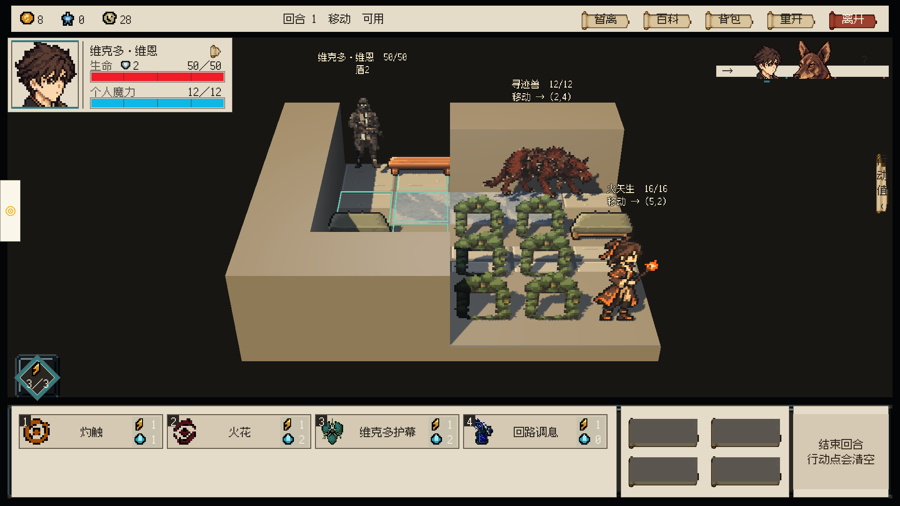
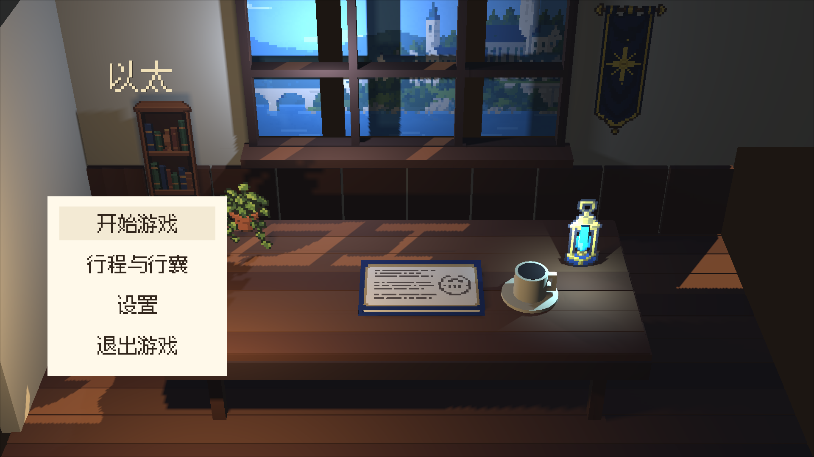

正面俯视 · HD-2D 可玩战斗样板
沿用旧版正面阅读方向：35°俯角、0°水平偏角，保持固定相机朝向。HD-2D用于真实地面、直立像素角色、立体墙和统一光影；战棋占格与既定操作保留。
Unity实机录制：首次点击预览、再次确认、双击移动、攻击与施法、敌方回合、胜利。使用隔离存档验证。
正面俯视战场

主菜单 · 相同正面俯视方向

这是可玩迁移样板，尚未替换正式战斗入口。墙体采用几何样板材质；正式墙面、物件受光统一、遮挡提示、完整状态与意图布局仍需制作。原生像素源图保持Point采样，不改变玩法与用户存档。
上一批场景与战斗外页面